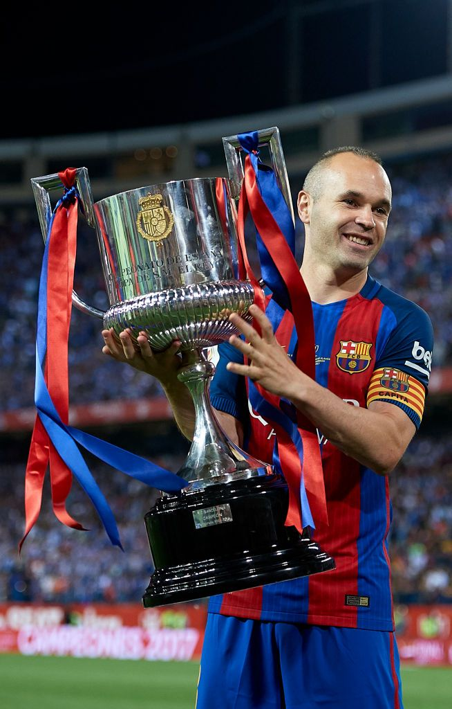

Bienvenue sur le site des fans du FC Barcelone
Choisissez un onglet pour découvrir l’histoire, la création, le palmarès et les légendes du club.
Histoire du FC Barcelone
Le FC Barcelone, fondé en 1899 par Joan Gamper, est bien plus qu’un club de football : un symbole culturel, sportif et social en Catalogne. Depuis sa création, il incarne la devise « Més que un club » — plus qu’un club.

Création du FC Barcelone
Le club a été fondé par un groupe de jeunes footballeurs passionnés. Leur ambition a donné naissance à une institution mondiale symbolisant la passion, la culture et le sport.

Palmarès du FC Barcelone
-
LaLiga — 27 titres
-
Ligue des Champions — 5 titres

-
Coupe du Roi — 31 titres

-
Supercoupe d’Espagne — 14 titres

-
Coupe du Monde des Clubs — 3 titres

Légendes du FC Barcelone
Johan Cruyff

En 1973, Cruyff quitte l’Ajax Amsterdam, où il a tout gagné, pour rejoindre le FC Barcelone. Le club catalan, alors en difficulté sportive, dépense une somme record pour l’époque afin d’attirer le meilleur joueur du monde. Un impact immédiat Dès son arrivée, Cruyff change tout : Il impose une philosophie de jeu collective et offensive, héritée du « football total » néerlandais. Il devient un symbole de liberté et d’élégance, autant sur le terrain que dans la société espagnole encore marquée par la dictature franquiste. Après sa carrière de joueur (et un passage à l’Ajax comme entraîneur), Cruyff revient au FC Barcelone en 1988, cette fois comme entraîneur du Barça.
Lionel Messi

Carrière au FC Barcelone (2000–2021) À 13 ans, Messi s’installe à Barcelone et intègre la Masia, le centre de formation du club. Il progresse rapidement et fait ses débuts professionnels en 2004, à seulement 17 ans. Pendant 17 ans, il devient la légende vivante du club et le meilleur joueur de l'histoire du football : 778 matchs joués 672 buts marqués 10 titres de champion d’Espagne (Liga) 7 Coupes du Roi 4 Ligues des Champions 3 Coupes du Monde des Clubs 6 Ballons d’Or (pendant sa période barcelonaise) Son duo avec Xavi et Iniesta, puis sa rivalité avec Cristiano Ronaldo, marquent une époque entière du football mondial.
Andrés Iniesta
Iniesta fait ses débuts avec l’équipe première du FC Barcelone en 2002, à seulement 18 ans, sous les ordres de Louis van Gaal. Discret au départ, il apprend aux côtés de joueurs expérimentés comme Xavi, Ronaldinho et Deco. Sa polyvalence et sa capacité à comprendre le jeu avant les autres lui permettent de s’imposer peu à peu dans l’effectif. Pendant ses 16 saisons en équipe première, Iniesta remporte tout : 9 Liga (championnats d’Espagne) 6 Coupes du Roi 4 Ligues des Champions (2006, 2009, 2011, 2015) 3 Supercoupes d’Europe 3 Coupes du Monde des Clubs 6 Supercoupes d’Espagne En tout, 35 trophées avec le FC Barcelone. Il fait partie de la génération dorée qui a dominé le football mondial de 2008 à 2015.